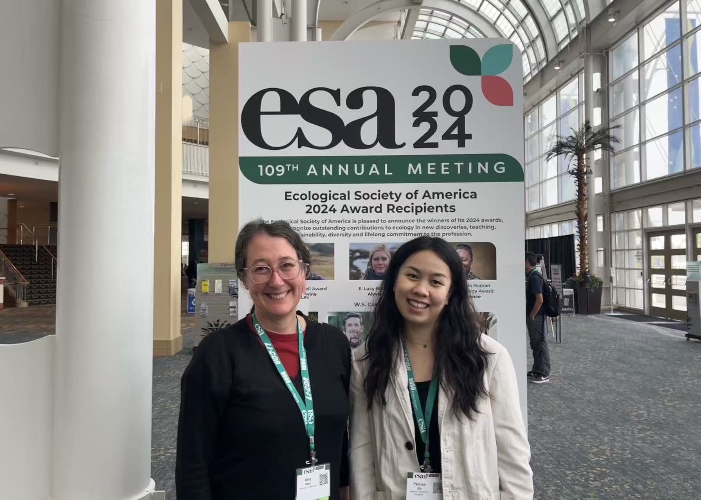
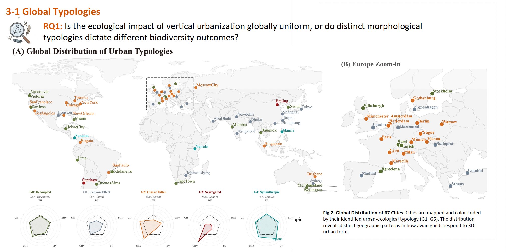
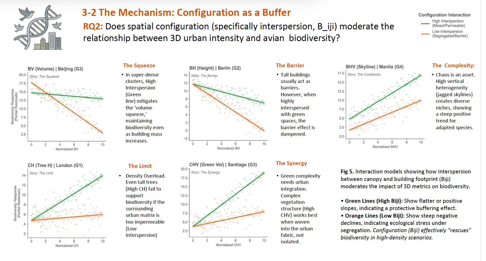

Conferences and talks
Three posters and a talk, each one a step in the same argument: that a city's form can be measured well enough to predict the bird life it supports, and that the way we measure it changes the answer.
Taking it to the people who build cities
A talk at the Smart Cities symposium in Singapore, given to an audience of planners, engineers, and researchers rather than ecologists. Officers from the Housing and Development Board, the National Parks Board, and the Urban Redevelopment Authority were in the room, which is exactly the audience this work has to reach. The argument there was the one that matters most outside the discipline: single-site studies do not scale, so a comparison across many cities is what separates the rules that hold everywhere from the ones that depend on local context.

Does a city's shape decide which birds live there
Singapore as a single case, read patch by patch. Most work on urban birds measures green space and stops there, so this poster added the built side of the city: how tall the buildings are, how much their heights vary, and how much ground they cover. Built form turned out to matter in its own right, and the three-dimensional shape of a place mattered as much as the amount of green in it.
Yeshan Qiu, Dengkai Chi, Naika Meili, Yue Zhu, Jing Wang, Mark J. McDonnell, Tan Puay Yok.


How far around a bird should we measure
A bird sighting has a location, but it does not tell you how much of the surrounding city that bird actually responds to. Using citizen-science sightings, this poster drew circles from 250 metres out to two kilometres around each record and re-ran the analysis at every size. Some features only matter close in; others appear only at the larger sizes. So the radius is a decision that changes the answer, not a technical detail.
Yeshan Qiu, Dengkai Chi, Naika Meili, Yue Zhu, Jing Wang, Mark J. McDonnell, Tan Puay Yok.

Building upward is not equally bad everywhere
Cities are growing upward, and the poster asks whether that vertical growth is bad for birds everywhere or only in some kinds of city. Sixty-seven cities sort into five morphological types, and the answer turns out to depend less on how much building there is than on how the building and the greenery are mixed together.


Counting birds for fun as well as for work
Twenty-four hours, one island, and as many species as a team can find. The Singapore Bird Race is the citizen-science tradition my data comes from, seen from the other side, and it is a useful reminder of how records are actually made: who was looking, where they could get to, and what time of day it was. Good models start with respect for that.